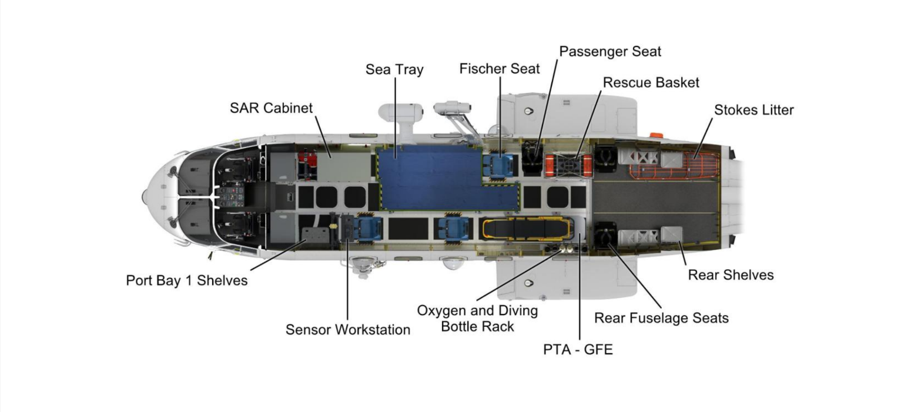

BUILD THE VISUAL BASELINE
Point it out. Give it a name.
Click the original SAR-3 plan to add a numbered marker. We can discuss each number together.
Click an unmarked spot to add a marker. Select a number to edit it. Enlarge the image for detail.

SAR-3 Pax · supplied annotated planMarkers record visual locations only; they do not define W&B arms.